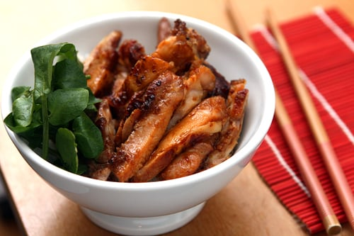

My favorite food
Chicken Teriyaki

Chicken Teriyaki
Teriyaki Souce Ingredienser
- Chicken breasts: Use boneless skinless and cook it a bit longer
- Olive oil: Vegetable oil can be used as well
- Low sodium soya souce: you can mix with another kind of soya souce
- Honey: If you dont have honey use instead brown sugar
- Rice vinager: Apple cider vinegar work well to
- Sesame oil: Peanut oil can be used as well
- Garlic: You can add it as much as you preffer
- Sesame seed and green onions: Add them if prefered
How to Make Chicken Teriyaki
- Heat oil in a large wok
- Add chicken and let cook
- While chicken cooking mix the Teriyaki souce
- Pour sauce into the skillet once the chicken is just nearly finished cooking through and let the sauce cook and simmer until thickened
- Serve it warm over brown or white rice with steamed vegies